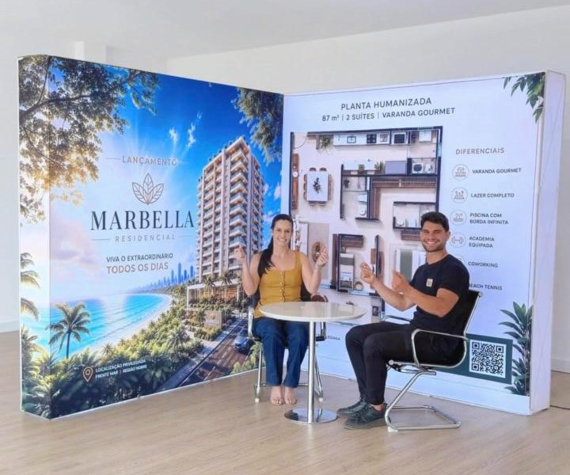

Qual tamanho de backdrop escolher?
O tamanho certo depende de três coisas: o que vai acontecer na frente do painel, o espaço que você tem e quantas pessoas aparecem na foto. Este guia resolve isso em cinco minutos.
Painel Expresso · Atualizado em novembro de 2026 · Leitura de 5 minutos
Resposta rápida
Para fundo de foto e palco, o tamanho mais usado é 2,25 × 2,25 m. Para espaço estreito ou para montar um estande com vários painéis, o formato vertical de 1,52 × 2,25 m. Para cobrir uma parede inteira, um backdrop panorâmico sob medida.
Os formatos lado a lado, na escala de uma pessoa
Com 2,25 m de altura, os dois formatos padrão ficam acima da cabeça de uma pessoa de 1,75 m, com sobra para a marca aparecer inteira na foto de corpo inteiro. A pessoa no desenho tem 1,75 m.
Escolha pelo que vai acontecer na frente do painel
Foto oficial e fila de fotos
2,25 × 2,25 m. A altura garante corpo inteiro com a marca por trás, e a largura cabe um pequeno grupo. Se a foto for de grupo grande, considere o panorâmico.
2,25 × 2,25 mFundo de palco e palestra
Meça a largura do palco. Se o painel padrão ficar pequeno no fundo, o panorâmico cobre tudo e evita parede aparecendo nas laterais da filmagem.
PanorâmicoEstande em feira
Combine painéis. Um 2,25 × 2,25 m no fundo e um vertical na lateral formam um estande de canto. Some um balcão portátil na frente para o atendimento.
CombinaçãoRecepção, loja e corredor
O vertical de 1,52 × 2,25 m ocupa pouco chão e continua alto o bastante para ser visto de longe.
1,52 × 2,25 mCenário de festa e decoração
Quando o painel é o cenário inteiro, vale cobrir a parede de ponta a ponta com o panorâmico.
PanorâmicoAntes de pedir, meça o espaço
Quatro medidas que o atendente vai perguntar. Com elas na mão, a indicação sai na primeira mensagem.
- 1
Largura livre
De uma ponta à outra de onde o painel vai ficar.
- 2
Altura do teto
Principalmente em loja, estande com teto ou sala de hotel.
- 3
Profundidade
Quanto espaço sobra na frente para as pessoas e para o fotógrafo.
- 4
Quantas pessoas
Aparecem juntas na foto ou no palco ao mesmo tempo.

Três erros comuns na hora de escolher
- Escolher pela parede, não pela foto. O que importa é o enquadramento da câmera: o painel precisa preencher o fundo da foto, não a parede inteira.
- Esquecer a altura do teto. Em loja e estande coberto, 2,25 m pode encostar em luminária ou viga.
- Colocar a marca no canto da arte. Logo e mensagem vão no centro e na altura dos ombros, onde a foto sempre pega.